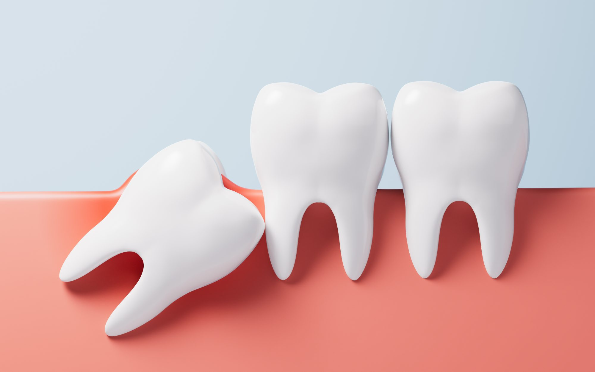

사랑니 발치
사랑니를 꼭 뽑아야 할까? 매복 상태, 신경과의 거리, 발치 전 검사와 발치 후 주의사항을 알아보세요.

사랑니, 모두 뽑는 것보다
먼저 위치와 위험을 봅니다
사랑니는 모두 같은 난이도의 발치 대상이 아닙니다. 정상적으로 자라 관리가 가능한 사랑니도 있지만, 부분 매복으로 염증이 반복되거나 옆 치아를 손상시키는 경우에는 발치 여부를 적극적으로 검토합니다. 구강악안면외과 전문의 진료 일정은 지점마다 다르며, 사랑니 상태에 따라 당일 발치가 어려울 수 있습니다.
화이트e치과 진료 포인트
- 01
사랑니의 위치·신경·염증·인접 치아를 먼저 확인합니다.
- 02
구강악안면외과 전문의 진료를 지점별 일정에 맞춰 안내합니다.
- 03
발치가 가능하더라도 난이도에 따라 진행 일정이 달라질 수 있습니다.
치료를 결정하기 전 알아야 할 기준
검사에서 확인할 것
- 맹출 방향
- 인접 치아 손상
- 염증
- 신경 또는 상악동과의 관계
- 전신질환·복용약
치료 선택지
- 경과 관찰
- 일반 발치
- 매복치 발치
- 추가 영상검사 및 전문 평가
이런 질문을 많이 하세요
- Q아프지 않은 사랑니도 뽑나요?
- Q신경과 가까우면 어떻게 하죠?
사랑니로 생길 수 있는 문제
모든 사랑니를 뽑아야 하는 것은 아니며, 아래와 같은 문제가 있거나 생길 가능성이 높을 때 발치를 검토합니다.
앞으로 기울어 난 사랑니
사랑니가 앞으로 기울어 나면 앞 어금니와의 사이에 음식물이 끼거나 충치가 생길 수 있습니다.
길게 솟아오른 사랑니
사랑니가 지나치게 솟아오르면 어금니 사이에 음식물이 자주 끼고 통증이 생길 수 있습니다.
충치가 생긴 사랑니
사랑니가 썩으면 통증이 생길 수 있습니다.
오래 방치된 충치
심하게 썩은 사랑니를 그대로 두면 통증이 심해지고 얼굴이 부을 수 있습니다.
검사부터 관리까지
발치 여부는 무엇으로 결정하나요?
반복적인 잇몸 염증, 충치, 인접 치아 손상, 낭종 가능성, 맹출 방향 등을 함께 살핍니다. 매복 상태만으로 모든 발치를 결정하지는 않습니다.
신경과 가까우면 어떻게 하나요?
아래턱 사랑니의 경우 하치조신경과의 관계를, 위턱 사랑니는 상악동과의 관계를 필요 시 영상검사로 확인합니다. 신경 손상·출혈·감염 등 가능한 위험을 사전에 설명해야 합니다.
당일 발치와 분할 발치
염증과 부종, 전신질환, 복용 약물, 난이도 등에 따라 검사 후 당일 진행하거나 일정을 달리할 수 있습니다. 일부 매복 사랑니는 치아를 나누어 제거하기도 합니다.
발치 후 회복
지혈 안내를 따르고 강한 가글·빨대 사용·흡연 등은 초기 회복을 방해할 수 있어 피합니다. 지속적인 심한 통증, 과다 출혈, 발열, 감각 이상이 있으면 진료가 필요합니다.
많이 묻는 질문
-
검사에서 문제 가능성이 낮고 관리가 가능하다면 경과 관찰을 선택할 수 있습니다.
-
방향만으로 판단하지 않으며 인접 치아·신경과의 관계 및 염증 상태를 함께 평가합니다.
-
지혈과 마취 회복 상태를 보고 부드러운 음식부터 섭취하되 개별 안내를 따릅니다.
-
신경 관련 증상 가능성이 있어 시술 치과에 즉시 알리고 평가받아야 합니다.
지점 안내 창원점 · 마산점
창원점과 마산점은 진료 의료진과 일정이 다를 수 있습니다. 지점을 선택하면 해당 지점의 진료시간, 주소와 연락처를 확인할 수 있습니다. 특정 전문의 진료와 개별 치료의 가능 여부는 예약 시 확인해 주세요.
치료 방법과 기간, 결과는 개인의 구강 상태에 따라 다를 수 있으며 부작용이 발생할 수 있습니다. 자세한 내용은 진료 시 담당 의료진과 상담해 주세요.